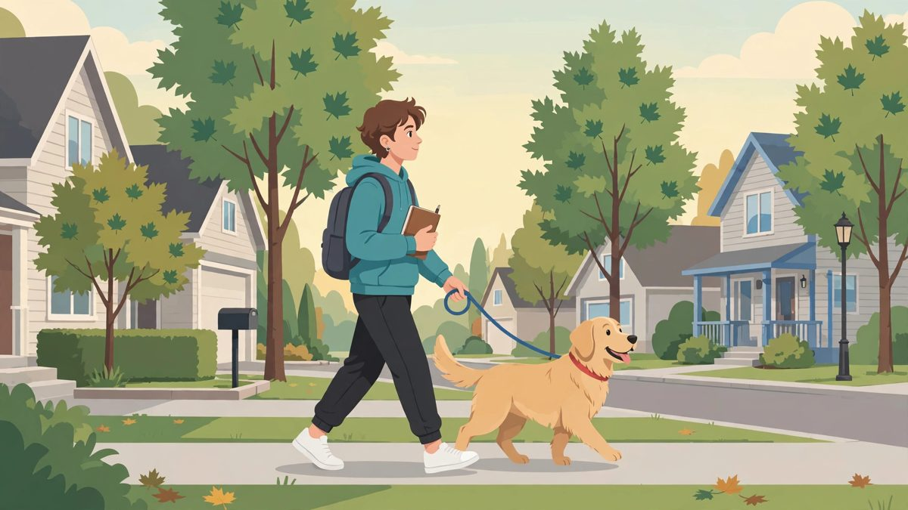

Dog walking and pet sitting for teens in Canada: the direct client route, honest math, and the stop line

The app will not take you. That is the fact most guides skip, and it decides the whole shape of this work for a teenager. Rover, the largest pet care platform named in Canadian roundups, states on its Canadian help pages that a sitter or dog walker must be at least 18 years of age. A teen plan built around signing up for an app is a plan built on a closed door. The open door is older and smaller: neighbours who already know the teen, one or two dogs at a time, paid directly. This guide builds that route honestly, costs and stop line included.
General information only, this article is not financial advice. For specific financial questions, talk to a qualified professional.
Who should not do this, and the stop line
Start with the readers who should walk away, because pet care punishes a bad fit faster than most teen work. A teen who is nervous around large or reactive dogs should not take walking work at any price. A teen whose school schedule already runs to homework at midnight has no hours to sell, and a dog booked at lunch will not wait for a free period. A teen who cannot reach a parent's phone quickly in an emergency, or whose family will not allow a parent to meet each new client first, is missing the safety structure this job needs.
The kill criterion, stated before any money moves: set a four week trial with a fixed review date. Track every walk, every minute of travel, and every dollar in a simple log. On the review date, stop if the effective hourly rate, worked out in the math section below, falls below the hourly pay of the part time jobs realistically open to the teen in the same town, or if any walk felt unsafe, or if school marks slipped during the trial. One of those three results ends the experiment. Continuing past a failed review is not persistence, it is a subsidy paid in grades and risk.
A second stop line runs underneath the first. The moment a client asks for something outside the agreed shape of the work, such as walking several unfamiliar dogs together, entering a home when no arrangement was made with a parent, or caring for an animal with a known bite history, the answer is no and the client is finished. Pet work stays safe by staying small and boring.
Why the apps are closed until 18
Rover states the age rule and the employment shape in the same place. Sitters and walkers must be at least 18, and they are considered independent contractors, which means each one is running a small business rather than working as a Rover employee. That second fact matters for the direct route too, because a teen walking neighbours dogs for pay is in the same legal shape: self employed, setting rates, choosing which work to accept, and carrying the record keeping that comes with it.
The platform fee is still worth learning now, for the birthday when the door opens. Rover applies a 20 percent service fee per booking for sitters, and notes that Canadian sitters may sit in a pilot program where fees differ. Owners pay their own 11 percent service fee at checkout, capped at $65. On a $25 booking at the standard rate, the sitter keeps $20. Direct clients pay no platform fee at all, which is the direct route's one clear financial advantage, balanced against the platform doing none of the finding, vetting, or payment chasing for a direct walker.
The honest math
Every figure below is a labelled scenario, not a promise and not a market rate survey. Families should replace the prices with quotes from their own streets before deciding anything. The point of the table is the method: travel and messaging time count as work, because the teen gives those minutes whether anyone pays for them or not.
| Scenario | Price per walk | Time per walk, walk plus travel | Walks per week | Weekly revenue | Effective hourly rate |
|---|---|---|---|---|---|
| Low: one dog, short walk, longer trip to reach it | $15 | 30 min walk plus 20 min travel, 50 min total | 3 | $45 | $18.00 |
| Expected: two regular clients, school nights | $20 | 45 min walk plus 15 min travel, 60 min total | 4 | $80 | $20.00 |
| High: close regulars plus a weekend sitting visit | $22 per walk, plus one $35 drop in visit | 50 min per walk, 40 min for the visit | 5 walks plus 1 visit | $145 | $30.00 |
Read the low row twice. A $15 walk for 30 minutes sounds like $30 an hour until the trip to the house is counted, and then it pays $18 an hour before any cost. Distance is the silent price cut in this business. A client three streets away and a client fifteen minutes away pay the same $15 for visibly different amounts of teen time, which is why the runbook below draws a small service area and defends it.
Costs at teen scale are modest but real. A spare leash, waste bags, weather appropriate footwear that can take daily kilometres, and a phone with data for client messages all belong in the cost column, even when a family already owns some of them. Startup cost in the scenarios above is assumed at $0 to $60 in cash, using gear already at home plus bags and a backup leash, and about two hours of unpaid setup time for the first client meetings. Break even on $60 of costs arrives inside the first two weeks of the expected scenario and inside the second week of the low scenario. The larger cost is never the gear. It is the standing claim on after school hours, which is why the kill criterion prices those hours against school results and not only against dollars.
Pet sitting visits follow the same arithmetic with one change. A drop in visit concentrates feeding, water, litter or yard cleanup, and a welfare check into a shorter block, so travel weighs even heavier per dollar. A teen should price a visit by total time away from home, not by minutes inside the clients house, and should decline sitting work for animals whose care needs medical steps the teen has not been trained to do.
The direct client runbook
- Draw the service area. Mark a walking radius of about ten minutes from home on a map. Every client inside it keeps travel near the expected scenario. Every client outside it needs a higher price or a polite no.
- Start with households that already know the teen. Neighbours, family friends, and teammates' parents are the first market. A parent attends the first meeting at each home, meets the dog, and confirms where keys, leashes, treats, and emergency contacts live.
- Agree the terms in writing before the first paid walk. One short message is enough: price per walk, walk length, days, what happens in severe weather, how payment arrives, and who to call if the dog is ill or escapes. Written terms protect the teen more than the client.
- Walk one dog per household at first, two at most. Small numbers keep control simple and keep the work clear of commercial group walking rules. Add nothing that turns a solo walk into a pack.
- Log every job the same day. Date, client, time out and back, amount paid, and any incident, however small. The log is the tax record, the kill criterion evidence, and the reference list for future clients, all in one place.
- Review at four weeks, on the date set at the start. Compute the effective hourly rate from the log, check school and safety against the stop lines, and only then decide whether to add a client, raise a price, or close the trial.
What success looks like: after four weeks the teen holds a log showing every walk and dollar, an effective hourly rate at or above the local part time alternative, no unsafe incidents, and clients who pay on the agreed day without chasing.
Safety, permits, and the tax line
Municipal rules are the fact most teen guides omit entirely. In Toronto, the city offers a Commercial Dog Walker Permit for individuals walking four to six dogs on a commercial basis. The permit requires evidence of commercial general liability insurance of $2,000,000, with the city named as an additional insured, and the fee from January 1, 2026 is $305.99 for one year, with shorter terms at $153.00 for six months and $76.50 for three months, tax not included. No teen needs that permit for a solo neighbourhood walk, and that is precisely the lesson: group walking at commercial scale is a regulated adult business with insurance costs that erase teen margins. Staying at one or two dogs is not a lack of ambition. It is the line between a teen job and a licensed operation. Rules differ by city, so a family outside Toronto checks its own municipal site for the local version before the first paid walk.
Safety practice is simpler and stricter. Never agree to walk a dog whose owner hides a bite or lunging history. Keep the dog on the leash the owner provided, on the route agreed, and carry a phone with the owner's number and a parent's number saved. If a dog escapes or is hurt, the teen calls the owner and a parent immediately and writes the incident in the log the same day. A teen who feels a situation sliding out of control ends the walk and goes home. No fee is worth a bite.
The tax line is general information, and it is short at teen scale. The Canada Revenue Agency describes a self employed person as someone carrying out their own business, who can negotiate rates and accept or refuse work. Its guidance for self employed workers is to keep detailed records of all income and business expenses, and to report income and expenses on the tax return using Form T2125, Statement of Business or Professional Activities. No tax is withheld when a teen works this way, because there is no employer withholding it. Expenses can be deducted, so tax applies to net profit rather than gross receipts. The CRA platform economy guidance adds that once total taxable sales pass $30,000 over four calendar quarters, GST/HST registration and collection enter the picture, a threshold a teen trial will not approach but a growing adult business must watch. A family unsure how a teens total income fits together should ask a qualified tax professional rather than guessing.
The decision framework
Decide in this order. First, safety: can a parent meet every client, and will the teen refuse work outside the agreed shape? If not, stop here. Second, hours: does the week hold four to six unclaimed hours after school, homework, and sleep? If not, the job will pay in marks instead of money. Third, distance: are at least two dog owning households inside a ten minute radius willing to pay a price that survives the travel math? If not, the effective rate fails before the first walk. Fourth, temperament: does the teen actually like dogs enough to show up cheerfully in February rain? Clients renew consistency, not enthusiasm from a single sunny week.
Four yes answers make a sound four week trial. Anything less makes this the wrong first business, and there is no shame in that verdict. The teens who earn well from pet care are rarely the ones who started fastest. They are the ones who started small, logged everything, priced their travel, and were still standing, reliable and unbitten, when neighbours began recommending them unprompted.
General information only, this article is not financial advice. For specific financial questions, talk to a qualified professional.